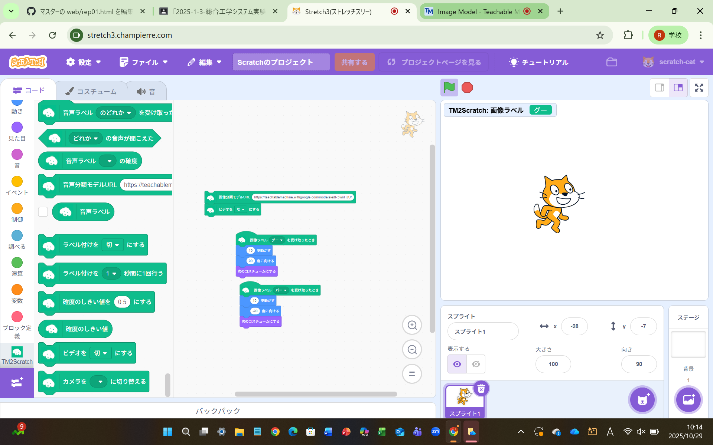
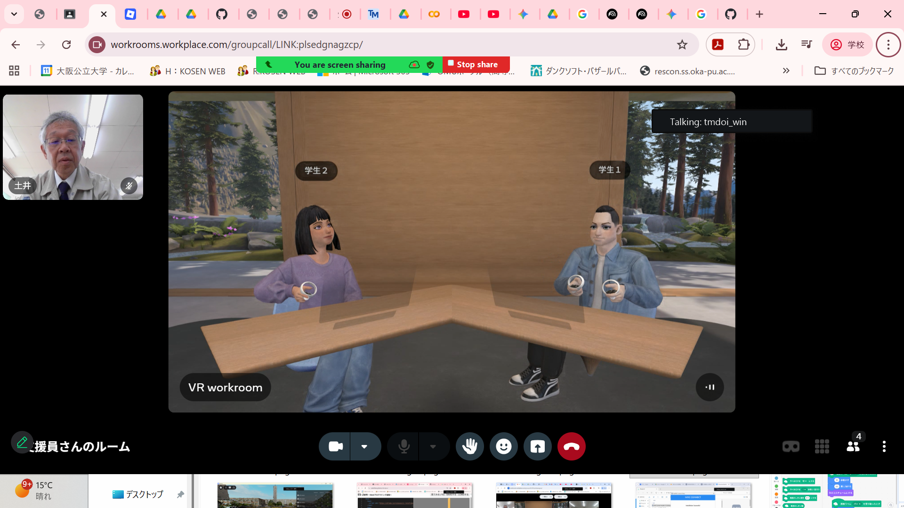
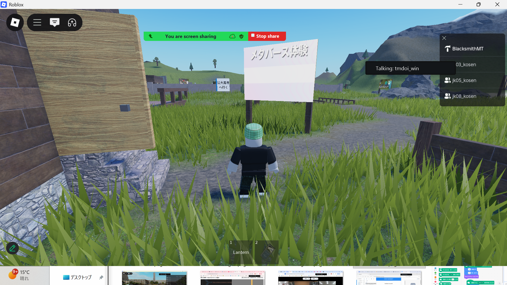

第2週目
2-1 2週目のレポートをHTMLで作る
1.内容
2週目のレポートには、機械学習、VR体験、のことについて内容、感想、写真を描いた。１週目と同じように
yourIDの部分を自分のIDに書き換えそれぞれのリンクに飛ばせるようにした。
2.感想
２週目でやった内容がたくさんあったので情報量が多かった。すべての内容が書けたわけではないが、個人的に心に残った
内容をかけてよかった。
3. 2週目が完成した人は1週目のレポートも完成させる
2-2 機械学習体験

1.内容
機械学習体験では、teachable machineを使ってグー、チョキ、パーの３種類をコンピューターに学習させてウェブカメラでその３種類を
読み取れるようにした。teachable machineにウェブカメラで自分がグーをしているポーズをたくさんアップロードする。これをチョキと
パーで同じことを繰り返して学習させる。そのあと、stretch3に読み込ませてscratchで３種類の分別をできるようにした。
2.感想
teachable machineに自分のポーズを学習させる際に１種類のポーズにつき約１００枚程度アップロードしたが、今回ではチョキとパーの
見分け曖昧だった。だから、もっと正確に認識させるにはより多くの画像をアップロードしなければいけないと思った。
2-3 VR（バーチャルリアリティー：Virtual Reality）の体験
 
1.内容
workroomとrobloxでVR体験をした。workroomでは６人ほどで参加して、会議室に座った。Robloxでは田舎で歩き回ったり
公大高専へ行ってキャンパス内を歩き回ったりした。
2.感想
今回初めてVRゴーグルを使ってみて、周りの景色が完全にパソコン内の世界でとても楽しかった。とても没入感があって
他のゲームでも使ってみたいなと思った。手で持つコントローラーの操作が慣れるのに時間がかかった。